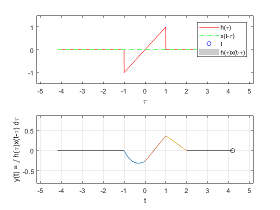
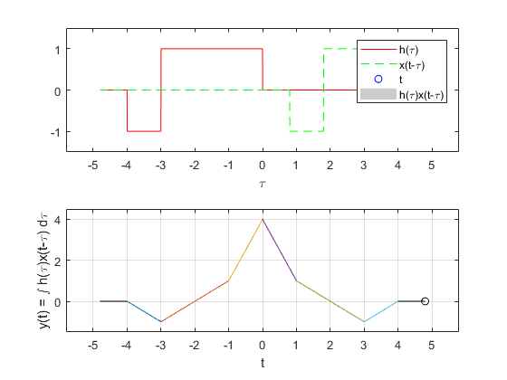
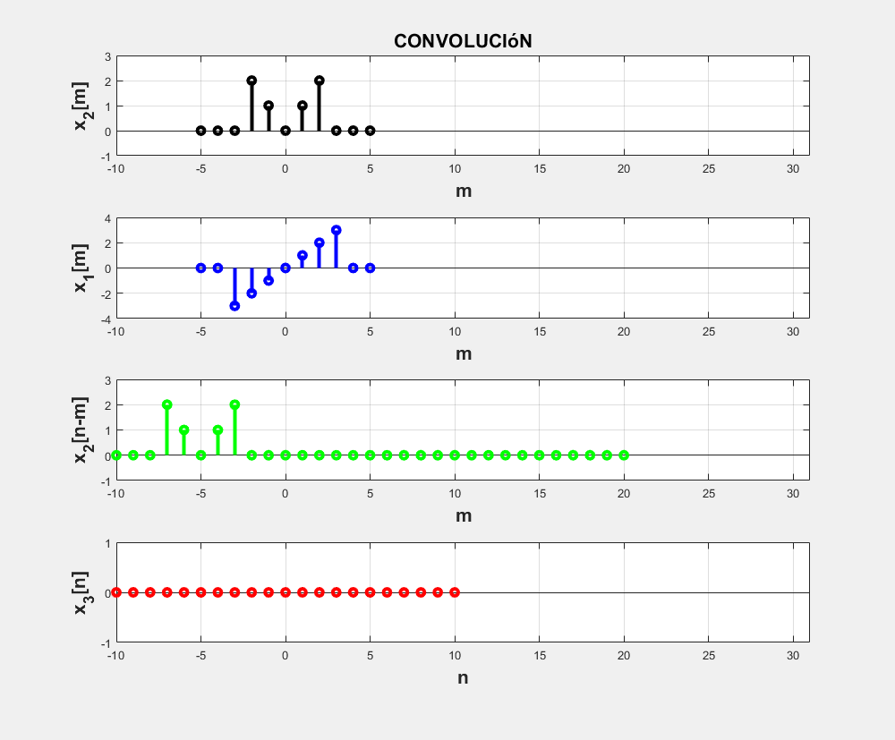
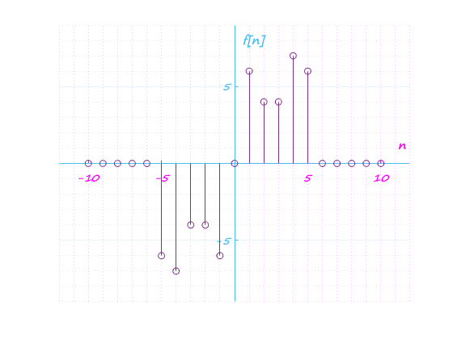

Práctica 4: Convolución y Correlación de señales en tiempo continuo
Contents
Objetivos:
- Conocer métodos básicos de integración numérica
- Manipulación de instrucciones en MATLAB
- Simular convoluciones y correlaciones de señales continuas
- Simular convoluciones y correlaciones de señales discretas
Problema 1
f = @(t)exp(-t).*(t>=0&t<1)+0*(t>=-1&t<0); g = @(t)t.*(t>=-1&t<1); convconm(f, g) syms t h0=piecewise(t<-1, 0, -1<t<0, t+2*exp(-t-1)-1, t>0, 0); h1=piecewise(t<0, 0, 0<t<1, (2-t)/exp(1) +t-1, t>1, 0); h2=piecewise(t<1, 0, 1<t<2, (2-t)/exp(1), t>2, 0); hold on fplot(h0, [-1 0]) fplot(h1, [0 1]) fplot(h2, [1 2]) hold off
Problema 2
x1=@(t) heaviside(t)-2*heaviside(t - 3)+heaviside(t - 4); x2=@(t) heaviside(-t)-2*heaviside(-t - 3)+heaviside(-t - 4); convconm(x1, x2) syms t y0=piecewise(t<-4, 0, -4<t<-3, -t-4, t>-3, 0); y1=piecewise(t<-3, 0, -3<t<-1, t+2, t>-1, 0); y2=piecewise(t<-1, 0, -1<t<0, 4+3*t, t>0, 0); y3=piecewise(t<0, 0, 0<t<1, 4-3*t, t>1, 0); y4=piecewise(t<1, 0, 1<t<3, 2-t, t>3, 0); y5=piecewise(t<3, 0, 3<t<4, t-4, t>4, 0); hold on fplot(y0, [-4 -3]) fplot(y1, [-3 -1]) fplot(y2, [-1 0]) fplot(y3, [0 1]) fplot(y4, [1 3]) fplot(y5, [3 4]) hold off
Problema 3
La siguiente imagen muestra la simulacion de la convolucion de la señal C con la señal D en tiempo discreto:
Problema 4
La siguiente imagen muestra la simulacion de la correlacion de la señal C con la señal D en tiempo discreto: * Usando el metodo de convolucion (el espejo de la señal D es la misma señal)
Problema 5
a=[0 0 -3 -2 -1 0 1 2 3 0 0]; b=[0 0 0 2 1 0 1 2 0 0 0]; R = conv(a, b); GraficaD([-10:10], R)